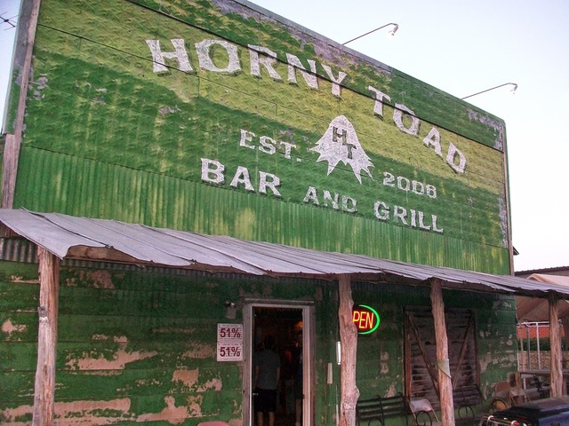
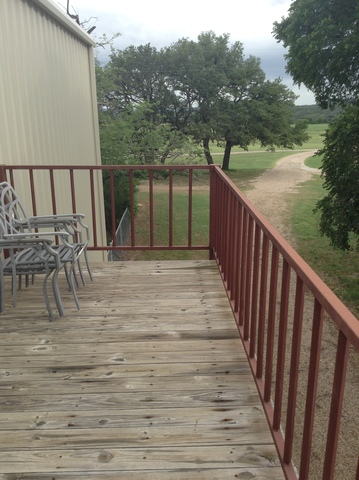
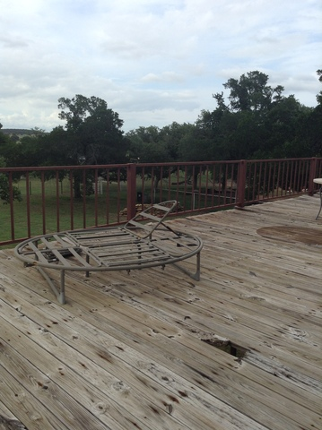

Sun 22 June 2014
Culture Shock
I'd like to start by confirming for regular readers that the phone server update went as well as I could have hoped. After watching my setup script fail beautifully about ten times, I finally walked away with a working phone system at around 4:00 last Sunday night, upgraded and configured for easy maintenance. I've been making little tweaks to it all week and have fixed some of the odd quirks that the system used to have, also.

With that done, I'd like to transition to the main happenings of last week: a meeting of the Ethne missionary group to discuss global plans. About twenty new people were staying on the farm, which doubled the number of people usually staying here. Every bed was filled with missionaries who had come back from Southeast Asia, Africa, and the Middle East.
My goal this week was to hear as many interesting stories as possible from this interesting group. They all said that they followed God's voice wherever they were supposed to go, and it led them to completely unexpected places and peoples. One went to work with the Kurds (an ethnic group in the Middle East) when she felt a draw only when hearing the name of the people group. Another went to Southeast Asia after hearing the name of the city several times within a week, right when he began to pray about it. It was a pretty great testiment to the power of listening to God because of the great work they've done in the years they've had overseas.
We worshipped together every morning, which was a great experience. We got to spend one morning in the old rock church. It was built in the 1800s and was rennovated to be as close to the original look as possible. It was a wonderful space to share in such powerful worship.

The last of the missionaries left yesterday morning. It's going to get back to normal now, to an extent. Loren and his wife Deb are planning on taking Jachin and I on a church tour to a bunch of different denominations as an educational experience, which I'm really excited about. We'll be going to two churches each week just to learn about them. We're all excited to start that.
I have a feeling a lot of this week is going to be cleaning up the not-so-tidy configuration that I put together for the phone server and trying to figure out the best way to restring phones across to the distant houses. I'm going to need all the patience God can give me for that task!
Sun 15 June 2014
Thunderstruck!
This week began with thunderstorms. Fortunately, thunderstorms bring rain, and we need it here. Unfortunately, thunderstorms bring lightning, and lightning doesn't get along very well with technology, especially when you're hit with a dead-on strike.
And so, I apologize in advance. My week was lots of tech and very little people. If you want to skip to the interesting part, I went to the rodeo this weekend. Just scroll down to the fox, and start there.
I woke up Monday morning (an hour earlier than my alarm) with Loren and Deb (a missionary couple back from Scotland staying with us and learning about film production) knocking at my door. The phones were out down in the more distant reaches of the farm, so it would be great if I could look at that. Also, Loren's computer appears to be dead, and it would be nice if I could look at that, too.
Loren's computer was fairly easy to fix: motherboard's blown, so just plug the hard drive in a different motherboard. The phone problem turned out not only to be a phone problem, though: all internet access was down out there. An entire switch went down in the first home, and so we would need to purchase a new one to get everything back how it used to be. And, as I quickly found out, the wiring for those houses is not documented. And Matt (supervisor) was busy or out of town all week.

On the plus side, we did get internet back to the farthest residence. There's currently a wireless connection between two of the houses because we can't seem to identify the cable running between them, and we don't have phones lines out there yet, but it's a good enough patch job for now. Nevertheless, it was not the way I would have preferred to start the week.

I spent the rest of the week preparing for a phone server update. I've got it almost completely automated by now. Tonight, I'm going to be staying up beside my computer to watch it happen. I effectively just need to be there for disaster relief. This is about what I'll be seeing scroll past my screen for several hours, starting at 11:
I found out that you can use other animals, too, and couldn't resist making these commands.
Speaking of cows, I got to go to the All Around Ranch Rodeo this weekend, which Matt was filming. If you've ever been to a rodeo before, it's not necessarily what you're thinking. Ranch rodeo contenders (teams of five) are actual cowhands on farms, and the ranch rodeo is designed to show off skills they use on a regular basis. While there was still bucking bronc riding, there were also events like sorting and branding. In sorting, the team had to pick three specific cattle out of a herd of 16 without letting any other cattle across the line. In branding, they had to take down a cattle, hold its legs, and then give it a chalk brand. Perhaps the most ridiculous event was the wild cow milking, where the team has to hold a wild cow still long enough to get at least one drop of milk into a bottle.
What really stuck with me is the pride that the cowboys had for their culture. The rodeo opened with a rousing speech about the true American qualities that cowboys expressed in their everyday work, including individuality, freedom, and work ethic. As corny as it may sound to people who aren't from Texas (and possibly to some people who are), the cowboys really take their heritage seriously and I was struck by the genuineness of the whole presentation. You could also tell by the way their children acted how passionate the cowboys were about their lifestyle. Most were dressed in flannel shirts, jeans, and cowboy boots. Kids as young as five were taking turns lassoing PVC pipe horses, dragged by their friends. There was a mini-bronc riding competition for children under ten. Everything the cowboys did, they wanted to instill in the next generation, and it's a very different look at education than the rigorous schooling that is stressed for children elsewhere.
I'll add pictures when I can get them from Matt, because there was some cool stuff there.
Today is Father's Day, and it's frustrating to be away for my second Father's Day in a row. The family just moved down to our new house in town last week, and I wasn't there for it. I've heard it went pretty well, all things considered, but I know it's been stressful for the whole family. But Dad, until I get home, here's a cheesy selfie with a crazy blown-up cliche Father's Day message! Love you, and wish I could be there with you all in the new house!
In the coming week, the farm is going to host a missionary conference. I'm not sure how much real work I'm going to get done, but I'll certainly meet some interesting people with interesting stories. Next project: Set up a proper firewall, with traffic shaping.
Sun 08 June 2014
Doctors and Dubugging: Dealing with Ailing People and Computers Alike
It's odd to think it's only been a week here. It really feels like I've been on the farm for much longer, possibly because I've been so busy while I'm here.
My first assignment was to help a doctor in Northern Africa for a field worker who had been sick with a parasite for three weeks. The country he was living in relied mostly on pharmacists for their medical needs, and none of their remedies helped. Fortunately, G3S2 had some contacts in that part of the world, and he had a good recommendation for a doctor. Although I didn't do any "searching," per se, I did get much better at writing emails. I was the main communications channel between here and there. I was really excited to hear that he made it to the doctor and had a follow-up visit scheduled for a few days down the road!
This last week I've also had my fair share of weird hardware come through my workspace. An old printer that refused to connect to the network (fixed with a crossover cable, for those who still remember those), an analog-to-VoIP phone adapter to reconfigure, and a Dell computer that couldn't find its toolbar all showed up to be fixed. (Two of those three are.)
We went to the Horny Toad Bar & Grill down the road on Wednesday night for the weekly pool tournament. I played terrible, but enjoyed myself anyway. The restaurant is known for its jalapeño buns, which are just spicy enough to be delicious. It's also known as the only restaurant in the town of Cranfills Gap, so it gets pretty good patronage from the surrounding area. After I lost, I played rummy with Mrs. Wallace, who picked up the game quite quickly for never having played before. (She beat me quite badly.) And Loren Bradley, another worker here, got second place in the pool tournament! (Pictures of him and his wife next week, perhaps?)

I've been really astounded by the beauty of the night sky here. When we went to camp near Hunt, Texas, I thought the stars couldn't get any brighter. Well, I think it's even darker here than it was there, so the stars shine even brighter. Something you lose about the stars in brighter areas is their depth: it's not just how many of them there are that impresses you, but how far back they go. It's the phenomenon that happened when the 3DS came out with video games. Something that used to be flat becomes infinitely layered. There are shooting stars every ten minutes or so. It makes you really appreciate God's promise to Abraham when you can see all of the stars that he could have numbered for future members of his family. Here are some pictures of my favorite star-watching spot, in the daytime when my imperfect iPad camera can capture it.
 

Today at First Baptist Church at Cranfills Gap, the new pastor and his wife got a good "pounding." Apparently, it comes from wedding gifts, where everyone would bring a pound of something for the new couple. Now they have poundings for other events, including welcoming in newcomers. The church had a good time welcoming in Pastor Dustin and his family, and I learned about a fun tradition.
This week I'm gearing up to configure a complete reboot of the G3S2 phone server. We did two full backups over the last couple days (one of the data to my laptop and an exact clone on an extra hard drive), and I'm testing new builds on my computer in virtual machines before I start messing around with the actual system. (A virtual machine is like running a separate computer system within your own computer, usually used for testing purposes or for isolating certain tasks as a separate server.) I'm finding out that a simple upgrade isn't going to be as easy as I'd hoped. There may be a few extremely late nights before this is over. (At least once, when I actually do the upgrade.) I've got about a week to prepare for that day, though.
Until then, I'll be doing more studying, more testing, and more Rubber Duck debugging. (It often works quite well.) (Here's the Wikipedia, just in case.)

Sun 01 June 2014
Arrival on Scene, and the Departure of Another
I made it to the farm! It's even more in the middle of nowhere than I'd previously expected. I'll be spending the summer with the Wallaces, who set up G3S2 at their old family farm. Yesterday and today I moved in and started to get to know the family!
Matt (the "executive" head of G3S2) showed me around the farm. It's a very pretty place. Anyone who is familiar with Texas plains a few days after a rainstorm should be pretty familiar: low, rolling hills, sparse trees, and green only where it needs to be. It would be perfect cowboy country if you could get rid of all the roads.

And, as on any good farm, there are dogs (3), cats (at least 3), horses (2), and goats (countably infinite)!


Of course, I didn't come to spend time outside with the animals. I came to work on computers, so that Matt doesn't have to. This is where I'll be spending more of my time.


I also got to meet one of the G3S2 workers who went overseas. She flew to the Middle East yesterday, and we met her for lunch by the airport before she left. Minorities fleeing Syria are often targetted for human trafficking and other persecution. Over the next week, this worker will be working to secure land for a religious minority refugee camp. While you pray for my influence at G3S2 this week, also keep her in your prayers!
I'll finish this first post by commemorating being completely unpacked with a selfie in my new room!